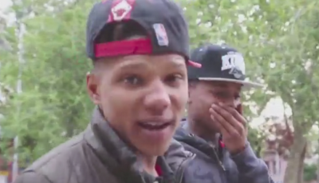
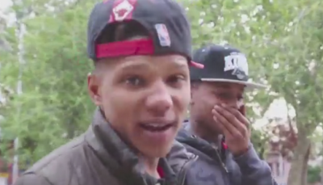

manual para identificar a un chopó
Le has dicho adios a un avion cuando va pasando. - Aplaudes cuando aterriza un avion. - Guardas las latas de pasta de tomate para usarlas como jarro. - Ves la lucha libre por television los domingos. - Has ido alguna vez al Parque Eugenio Maria de Hostos o al anfiteatro de color vision. - Si vas a la playa... te gusta que te hagan trensitas. - Te metes al mar en leotardos y pantalones cortos. - Bebes Don Ron. - Cuando salio el Matatan lo viste como modelo a imitar. - Usas las libretas Trapper Keeper para ir a la universidad. - No te pierdes Sabado Gigante. - Te mueres por salir en Ritmo Social. - Cuando ves a un artista... le pides autografo. - Has hecho tus compras en el mercado la pulga. - Guardas las corbatas con el nudo hecho. - Si eres hombre, te gusta andar en la casa sin camisa. - Te dejaste los bositos mas de un año antes de afeitartelos por primera vez. - Has usado pantalones chicle. - Vas al cinema centro. - Llevas en el retrovisor del carro un zapatito o un CD. - Si te da por barrer... crees que la escoba es un microfono y cantas como yissett. - Cuando ves la opcion de las doce... te identificas con algunos de sus personajes. - En lugar de decir "chulo" dice "jevi"